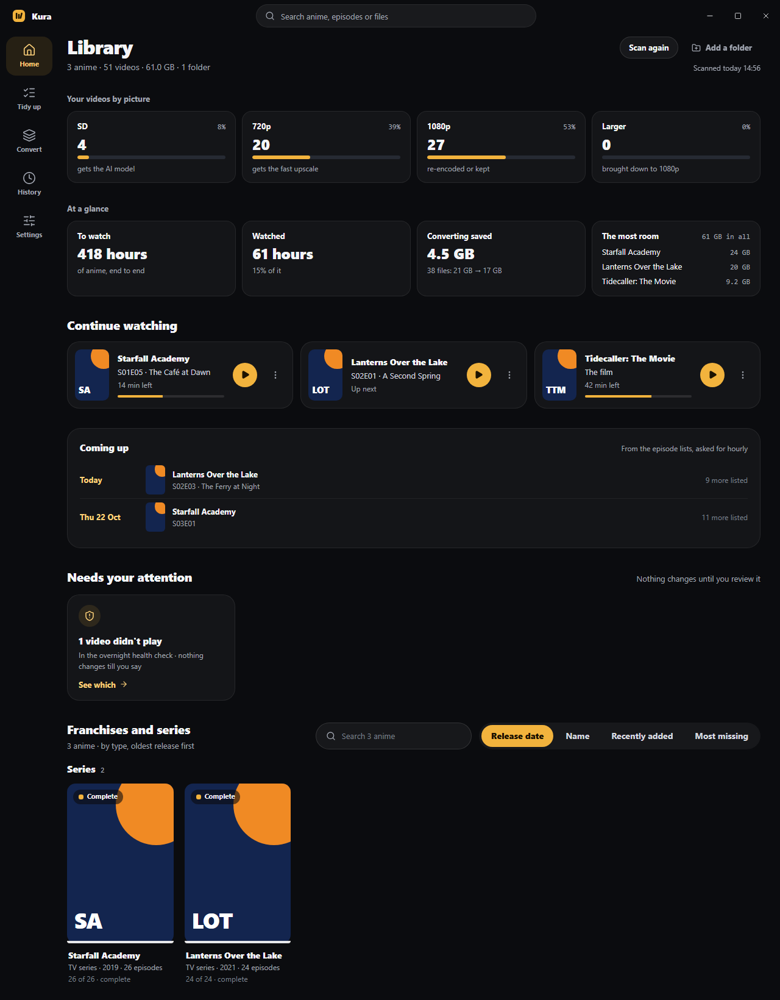
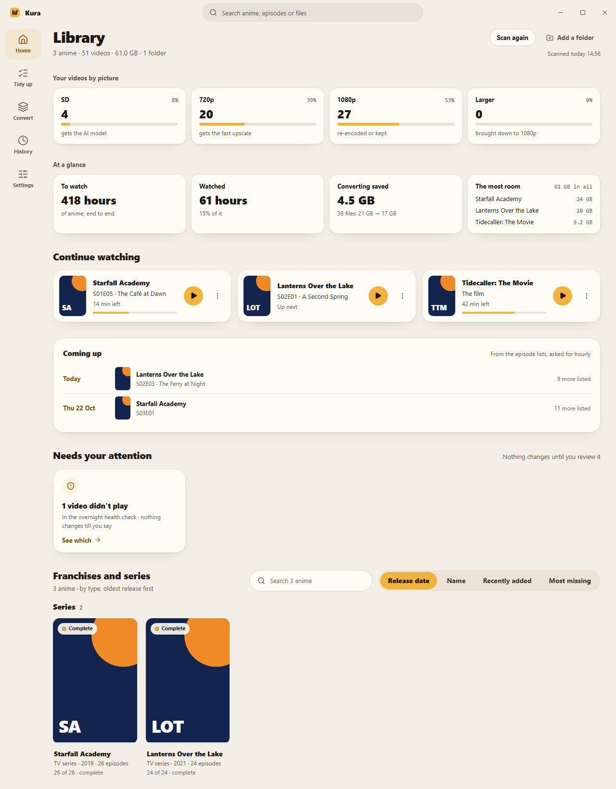
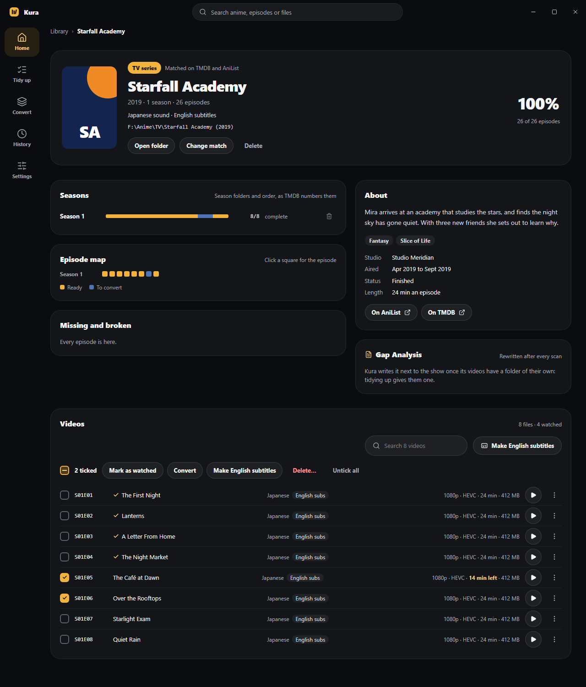
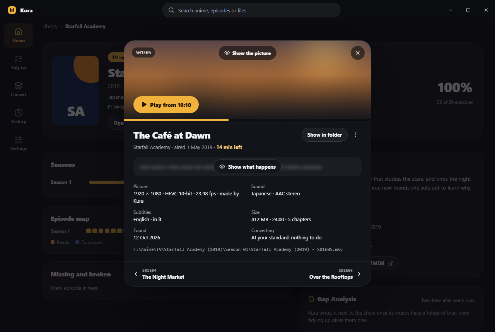
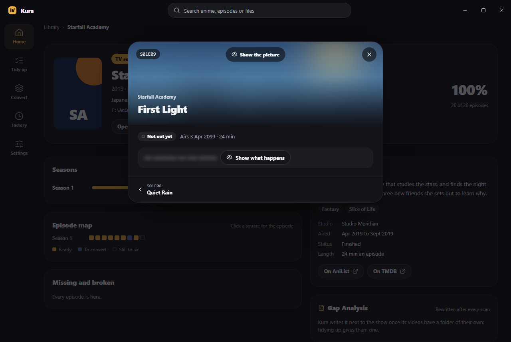
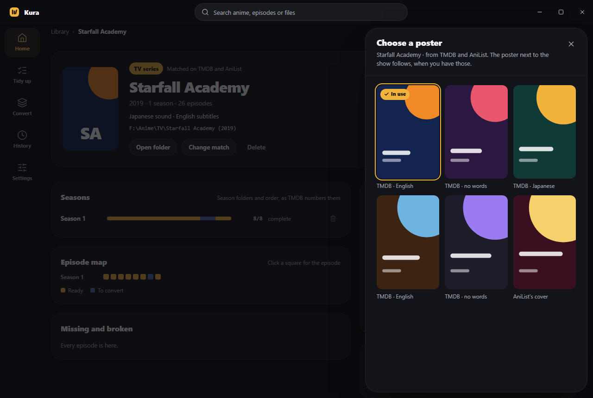
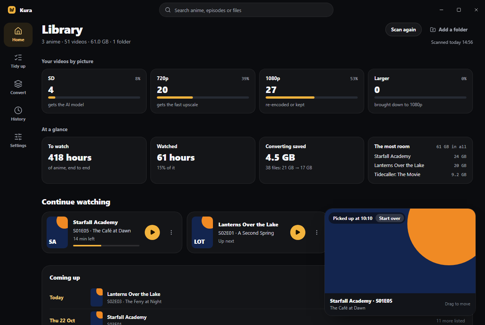
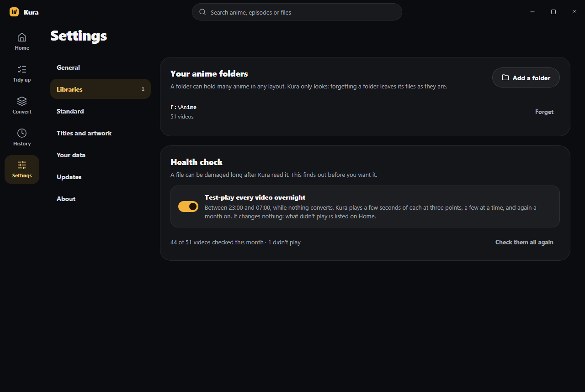
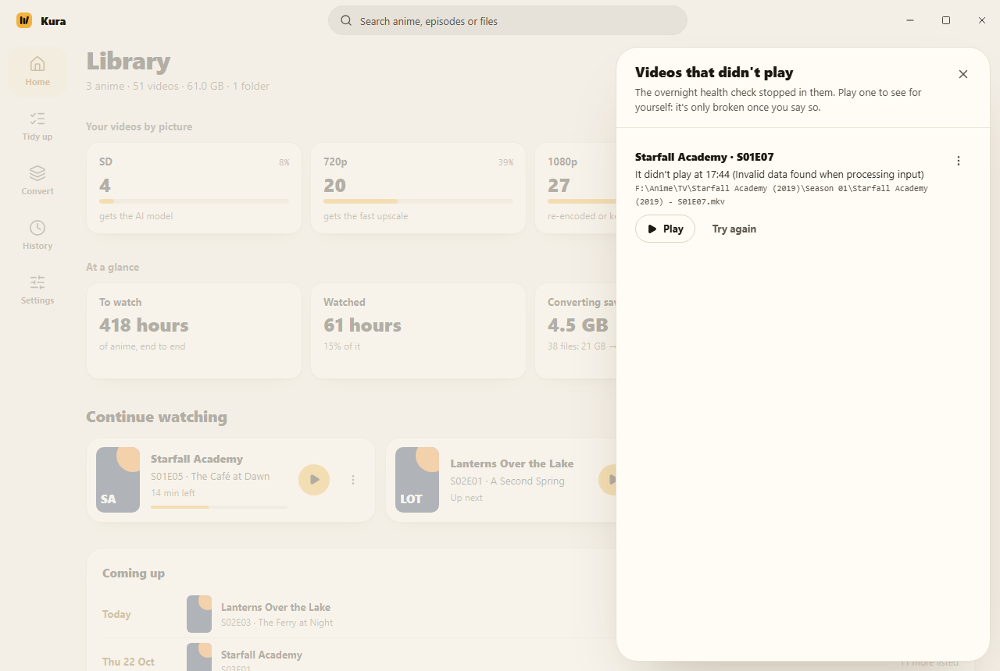

What 1.0 added, drawn after it was built: Kura's own screens with made-up titles, the posters and the pictures from episodes made-up art, and the video a stand-in.
The library by picture, at a glance (how long it plays, what's watched, what converting saved, the titles taking the most room), what you're part way through, what's coming up, and what needs you.

The same in light.

What it's about, beside its seasons and episode map; its videos with what's watched ticked and what's left of one stopped; ticks to do several at once.

Opened from its name or its ⋮ menu, as a card over the page: a picture from the episode across its top, blurred till asked while the episode isn't watched, with Play on it, the episode's title and air date, what happens in it behind a blur till asked, the file's tracks, length, size and place, what converting does, and the videos before and after it at its foot. Show in folder and Copy path are in every video's menu.

From the episode map or the lists, as a card with its picture and title across the top: an episode the library lacks says so, one still to air says when.

TMDB's posters, in English, Japanese or without words, and AniList's cover. The choice outlasts every refresh, and the poster next to the show follows it.

Play from Continue watching, or a title's videos: the player starts where the video stopped, with Start over for a moment.

Every video test-played overnight, a few at a time, and again a month on. On unless turned off in Settings › Libraries.

Listed on Home: play it and see, try again, call it fine or mark it broken. Nothing changes till you say.
